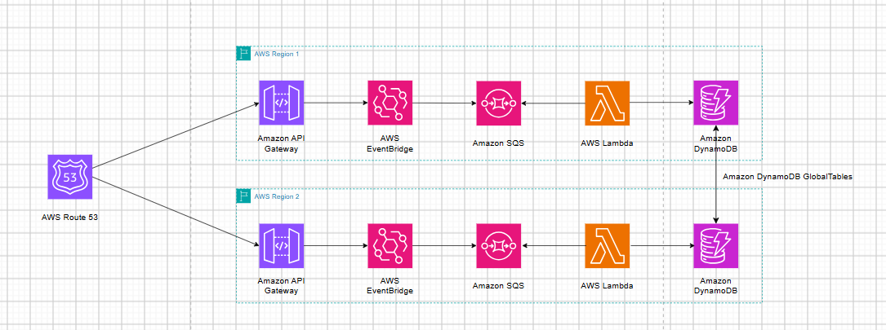

Khi một ứng dụng chỉ được triển khai tại một AWS Region, sự cố nghiêm trọng tại khu vực đó có thể làm gián đoạn toàn bộ dịch vụ. Điều này đặc biệt ảnh hưởng đến các hệ thống xử lý sự kiện như tiếp nhận đơn hàng, cập nhật giao dịch hoặc ghi nhận hoạt động người dùng, nơi yêu cầu về tính sẵn sàng và khả năng duy trì dữ liệu rất quan trọng.
Để hạn chế rủi ro, doanh nghiệp có thể triển khai kiến trúc Multi-Region, trong đó một Region đảm nhiệm vai trò chính và một Region khác được chuẩn bị làm môi trường dự phòng. Bằng cách kết hợp Amazon Route 53, Amazon API Gateway, Amazon EventBridge, Amazon SQS, AWS Lambda và Amazon DynamoDB Global Tables, hệ thống có thể chuyển hướng các yêu cầu mới sang Region dự phòng khi Region chính gặp sự cố.
Multi-Region Architecture là mô hình triển khai ứng dụng trên nhiều AWS Region nhằm giảm sự phụ thuộc vào một khu vực hạ tầng duy nhất. Trong bài viết này, giải pháp sử dụng mô hình Active-Passive gồm:
Bên cạnh đó, hệ thống sử dụng Event-Driven Architecture (EDA), cho phép các thành phần giao tiếp thông qua sự kiện thay vì phụ thuộc trực tiếp vào nhau. Cách tiếp cận này giúp tách biệt quá trình tiếp nhận, định tuyến và xử lý dữ liệu, đồng thời hỗ trợ mở rộng từng thành phần độc lập.
| Dịch vụ | Vai trò |
|---|---|
| Amazon Route 53 | Quản lý DNS, kiểm tra tình trạng endpoint và thực hiện Failover Routing. |
| Amazon API Gateway | Tiếp nhận yêu cầu HTTP/HTTPS và chuyển sự kiện đến EventBridge. |
| Amazon EventBridge | Tiếp nhận sự kiện qua Event Bus và định tuyến theo Event Rules. |
| Amazon SQS | Lưu giữ thông điệp trong hàng đợi để chờ xử lý. |
| AWS Lambda | Lấy thông điệp từ SQS, xử lý nghiệp vụ và ghi dữ liệu vào DynamoDB. |
| Amazon DynamoDB Global Tables | Nhân bản dữ liệu giữa các AWS Region. |
Amazon Route 53 – DNS Failover
Route 53 sử dụng Health Check để kiểm tra tình trạng hoạt động của endpoint tại Primary Region. Khi endpoint không còn đáp ứng điều kiện kiểm tra, Failover Routing Policy cho phép Route 53 trả về địa chỉ của Secondary Region cho các truy vấn DNS mới.
Amazon API Gateway và Amazon EventBridge
API Gateway là điểm tiếp nhận yêu cầu từ ứng dụng. Thông qua AWS Service Integration và API PutEvents, API Gateway chuyển dữ liệu sự kiện đến EventBridge. EventBridge tiếp nhận sự kiện, đánh giá các Event Rules và chuyển những sự kiện phù hợp đến Target được cấu hình.
Amazon SQS và AWS Lambda
SQS đóng vai trò hàng đợi trung gian, giúp tách biệt quá trình tiếp nhận sự kiện với quá trình xử lý. Lambda sử dụng Event Source Mapping để lấy thông điệp từ SQS theo từng batch và thực hiện logic nghiệp vụ.
Amazon DynamoDB Global Tables
Global Tables duy trì các bản sao của cùng một bảng DynamoDB tại nhiều Region. Khi dữ liệu được ghi vào một Replica, các thay đổi sẽ được nhân bản đến những Replica còn lại theo chế độ nhất quán đã cấu hình.
Giải pháp triển khai hai pipeline xử lý sự kiện độc lập tại hai AWS Region. Mỗi Region có các thành phần API Gateway, EventBridge, SQS và Lambda. Route 53 quản lý định tuyến DNS, trong khi DynamoDB Global Tables đảm nhiệm việc nhân bản dữ liệu giữa hai khu vực.
Sơ đồ kiến trúc:

Hình 1. Kiến trúc chuyển đổi dự phòng đa Region sử dụng Amazon Route 53 và các dịch vụ AWS Serverless.
Luồng xử lý chính tại mỗi Region:
Amazon API Gateway → Amazon EventBridge → Amazon SQS → AWS Lambda → Amazon DynamoDB
Khi Primary Region hoạt động ổn định, Route 53 phân giải tên miền và ưu tiên trả về endpoint của Region chính.
Luồng xử lý:
PutEvents.Khi Primary Region không còn đáp ứng điều kiện Health Check, Route 53 cập nhật trạng thái và áp dụng Failover Routing Policy.
Luồng xử lý:
Nhờ các thành phần đã được triển khai sẵn, Secondary Region có thể tiếp tục tiếp nhận và xử lý các yêu cầu mới mà không cần xây dựng lại toàn bộ hệ thống.
Khi endpoint của Primary Region hoạt động ổn định trở lại và vượt qua Health Check, Route 53 có thể tiếp tục ưu tiên Primary Record cho những truy vấn DNS mới.
Quá trình đưa lưu lượng trở về Region chính được gọi là Failback. Tuy nhiên, người dùng có thể vẫn sử dụng kết quả DNS cũ trong một khoảng thời gian do DNS cache và TTL. Vì vậy, quá trình chuyển đổi không nhất thiết diễn ra đồng thời trên tất cả thiết bị.
DynamoDB Global Tables giúp duy trì dữ liệu tại nhiều Region, cho phép ứng dụng truy cập bản sao cục bộ khi một Region khác gặp sự cố.
Hiện nay, Global Tables hỗ trợ hai chế độ nhất quán chính:
Trong mẫu kiến trúc của bài AWS gốc, cấu hình CloudFormation tạo các Replica nhưng không chỉ định chế độ nhất quán khác. Vì vậy, cấu hình mặc định được áp dụng là MREC.
Một số vấn đề cần quan tâm:
Do đó, không nên mặc định rằng mọi dữ liệu vừa ghi tại Primary Region đã được đồng bộ ngay lập tức sang Secondary Region.
Để triển khai giải pháp theo hướng dẫn AWS, cần chuẩn bị:
Quy trình triển khai tổng quát:
Ví dụ gửi sự kiện kiểm thử:
curl -X POST https://api.example.com \
-H "Content-Type: application/json" \
-d '{
"Detail": {
"IsHelloWorldExample": "true"
},
"DetailType": "POSTED",
"Source": "demo.event"
}' -v
Theo mẫu AWS, phản hồi HTTP có header X-Region để nhận biết Region đang tiếp nhận yêu cầu. Khi hoạt động bình thường, kết quả thể hiện Primary Region; sau khi Failover thành công, kết quả thể hiện Secondary Region.
Lưu ý: Với cấu hình Health Check mẫu có chu kỳ 30 giây và Failure Threshold bằng 3, thời gian phát hiện lỗi theo ngưỡng là khoảng 90 giây. Tuy nhiên, thời gian chuyển đổi thực tế còn phụ thuộc vào DNS TTL và bộ nhớ cache của DNS Resolver.
Lợi ích:
Những lưu ý quan trọng:
Sau khi hoàn thành thử nghiệm, nên xóa Secondary Stack trước rồi mới xóa Primary Stack theo hướng dẫn triển khai của AWS. Đặc biệt, cần sao lưu dữ liệu quan trọng vì quá trình xóa Primary Stack có thể xóa Global Table và dữ liệu đã lưu.
Kiến trúc Multi-Region Event-Driven Failover kết hợp Amazon EventBridge và Amazon Route 53 là giải pháp hỗ trợ cải thiện khả năng sẵn sàng và khôi phục cho các ứng dụng xử lý sự kiện trên AWS.
Trong mô hình này, Route 53 đảm nhiệm việc kiểm tra tình trạng endpoint và định tuyến DNS giữa Primary Region và Secondary Region. API Gateway tiếp nhận yêu cầu, EventBridge định tuyến sự kiện, SQS lưu trữ thông điệp, Lambda xử lý nghiệp vụ và DynamoDB Global Tables duy trì các bản sao dữ liệu giữa những Region được triển khai.
Thông qua kiến trúc này, có thể thấy việc xây dựng hệ thống dự phòng không chỉ đơn thuần là triển khai thêm một Region, mà còn cần bảo đảm các thành phần xử lý, dữ liệu và cơ chế chuyển đổi được chuẩn bị đồng bộ.
Tuy nhiên, để áp dụng trong môi trường thực tế, doanh nghiệp cần đánh giá RTO, RPO, DNS TTL, độ trễ nhân bản dữ liệu và khả năng xử lý thông điệp trùng lặp. Đây là những yếu tố quyết định mức độ phù hợp của kiến trúc đối với yêu cầu vận hành của từng ứng dụng.
AWS Compute Blog – Multi-Region event-driven failover architecture with Amazon EventBridge and Route 53:
https://aws.amazon.com/blogs/compute/multi-region-event-driven-failover-architecture-with-amazon-eventbridge-and-route-53/
Amazon Route 53 – Failover Routing:
https://docs.aws.amazon.com/Route53/latest/DeveloperGuide/routing-policy-failover.html
Amazon EventBridge – Rules in Amazon EventBridge:
https://docs.aws.amazon.com/eventbridge/latest/userguide/eb-rules.html
Amazon EventBridge API – PutEvents:
https://docs.aws.amazon.com/eventbridge/latest/APIReference/API_PutEvents.html
AWS Lambda – Using Lambda with Amazon SQS:
https://docs.aws.amazon.com/lambda/latest/dg/with-sqs.html
Amazon DynamoDB – Global Tables:
https://docs.aws.amazon.com/amazondynamodb/latest/developerguide/GlobalTables.html
Amazon DynamoDB – How Global Tables Work:
https://docs.aws.amazon.com/amazondynamodb/latest/developerguide/V2globaltables_HowItWorks.html
AWS CloudFormation – AWS SAM Transform:
https://docs.aws.amazon.com/AWSCloudFormation/latest/TemplateReference/transform-aws-serverless.html